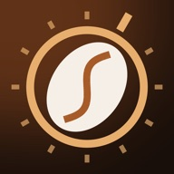

Espresso ratio calculator
The brew ratio from your dose and yield, or the yield to aim for from your dose and a target ratio.
Quick answer: brew ratio = espresso out ÷ coffee in, by weight. 18 g in and 36 g out is 1:2, a common starting point; 1:1.5 from the same dose is 27 g out and 1:2.5 is 45 g. Weigh the shot, do not go by volume.
A starting point. Your taste decides.
Yield chart and worked example
Espresso yield by dose and brew ratio
| Dose in | 1:1.5 | 1:2 | 1:2.5 | 1:3 |
|---|---|---|---|---|
| 14 g | 21 g | 28 g | 35 g | 42 g |
| 15 g | 22.5 g | 30 g | 37.5 g | 45 g |
| 16 g | 24 g | 32 g | 40 g | 48 g |
| 17 g | 25.5 g | 34 g | 42.5 g | 51 g |
| 18 g | 27 g | 36 g | 45 g | 54 g |
| 19 g | 28.5 g | 38 g | 47.5 g | 57 g |
| 20 g | 30 g | 40 g | 50 g | 60 g |
| 21 g | 31.5 g | 42 g | 52.5 g | 63 g |
| 22 g | 33 g | 44 g | 55 g | 66 g |
Yield = dose × ratio, both weighed in grams: the dry coffee in the basket and the liquid espresso in the cup.
What the ratio is called
| Style | Dial In and this calculator | La Marzocco Home's guide |
|---|---|---|
| Ristretto | up to 1:1.5 | 1:1 to 1:2 |
| Normale (espresso) | 1:1.5 to 1:2.5 | 1:2 to 1:3 |
| Lungo | above 1:2.5 | 1:3 to 1:4 |
Source: La Marzocco Home, "Brew Ratios Around the World". There is no single standard for these names: sources draw the lines in different places, so go by the number. Checked 12 November 2026.
Worked example: 18 g in, 36 g out
- Ratio = yield ÷ dose = 36 ÷ 18 = 2.0, written 1:2.
- That is a normale shot in this calculator, the usual place to start dialling in.
- Sour and thin? Keep the dose and grind finer, or run it longer to 1:2.2 (about 40 g). Bitter and harsh? Grind coarser or stop at 1:1.8 (about 32 g).
Result: 18 g of coffee and 36 g of espresso is a 1:2 ratio.

Dial In: Espresso Shot Log
Sour or bitter shot? Log it and Dial In tells you the one change for the next shot, with the number: "Grind finer: 13 → 12".
Questions
What is a 1:2 espresso ratio?
Two grams of liquid espresso for every gram of ground coffee: 18 g in the basket and 36 g in the cup. It is the common starting point for a modern espresso.
How much espresso should I get from 18 g of coffee?
27 g at 1:1.5, 36 g at 1:2, 45 g at 1:2.5 and 54 g at 1:3. Start at 36 g and adjust by taste.
How long should an espresso shot take?
There is no rule, but 25 to 30 seconds is typical: in a barista survey reported by the Specialty Coffee Association's 25 Magazine, about half the baristas pulled shots in that window. Use time as a clue and taste as the judge.
What is the difference between ristretto, espresso and lungo?
The same dose with less or more water through it. A ristretto is shorter and more concentrated, a lungo longer and lighter. Where one ends and the next begins depends on who you ask, so the table above shows two sets of ranges.
Why weigh the shot instead of measuring millilitres?
Crema is mostly gas, so the volume in the cup changes with the freshness of the beans while the weight does not. A small scale under the cup gives repeatable shots.